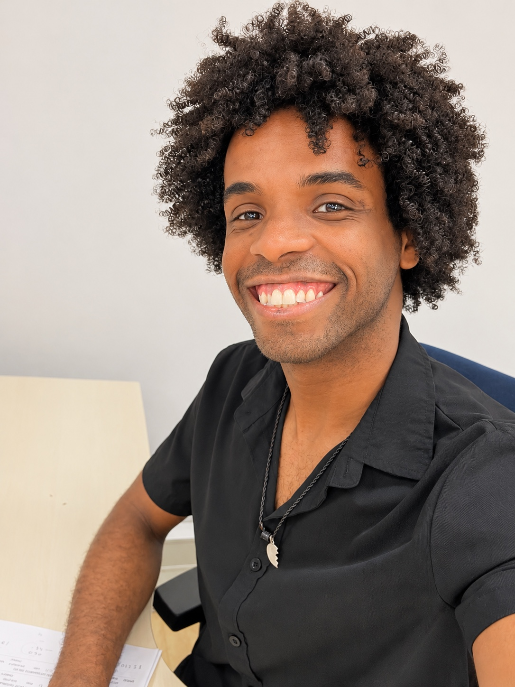
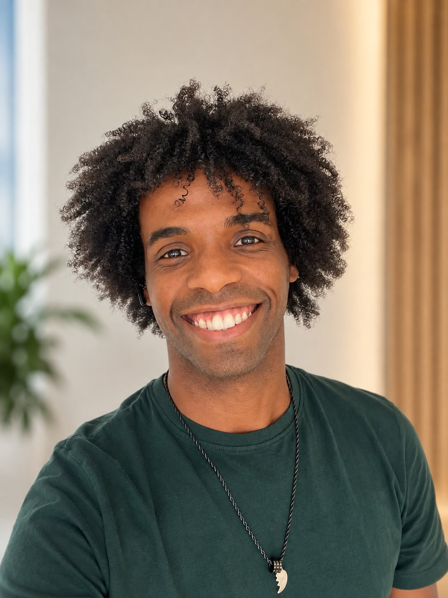

FORMAÇÃO
Direito & Gestão Pública
Estudos que fortaleceram o pensamento crítico, a análise, a compreensão institucional e o interesse pelas questões sociais.
TECNOLOGIA · CRIATIVIDADE · CONHECIMENTO
Sou Alisson. Um profissional de percurso multidisciplinar, curioso por natureza e em constante aprendizagem — explorando a tecnologia, a criação digital e as possibilidades de transformar ideias em projetos.
✳ Aprender. Experimentar. Criar. Continuar.

UMA PESSOA REAL, UM PERCURSO EM EVOLUÇÃO
“Nunca deixaremos de ser iniciantes, porque nunca deixaremos de aprender.”
01 / QUEM SOU

Acredito que cada experiência acrescenta uma nova perspetiva à forma como pensamos, trabalhamos e criamos.
A minha trajetória reúne formação em Direito e Gestão Pública, estudos ligados à educação, à docência e aos direitos humanos, e experiência profissional nas áreas administrativa e operacional da logística. São campos diferentes, mas que se cruzam no pensamento crítico, na organização, na comunicação e na procura de soluções para problemas concretos.
Atualmente, estou a aprofundar os meus conhecimentos em desenvolvimento web, programação, web design e experiência do utilizador. Interessa-me compreender como a tecnologia funciona e como pode ser utilizada para criar soluções úteis, acessíveis e bem pensadas.
Fora do trabalho e da tecnologia, interessam-me os idiomas, a cultura, a educação, os direitos humanos, a espiritualidade e a criatividade. Este site é um registo vivo dessa caminhada: reúne experiências, projetos, aprendizagens e ideias, sem a pretensão de apresentar um percurso acabado.
02 / TRAJETÓRIA
O meu percurso combina diferentes áreas. Cada uma contribui para a pessoa e o profissional que continuo a construir.
Estudos que fortaleceram o pensamento crítico, a análise, a compreensão institucional e o interesse pelas questões sociais.
Experiência em operações administrativas e logísticas, acompanhamento de processos, organização de informação e trabalho em equipa.
Interesse pela comunicação visual, arquitetura de informação e pela forma como as pessoas utilizam produtos e serviços digitais.
Estudo de HTML, CSS e JavaScript, com prática através de exercícios, experiências e projetos próprios. Inclui o curso de HTML5 e CSS3 do professor Gustavo Guanabara, pelo Curso em Vídeo.
03 / FORMAÇÃO
Formação académica e percursos complementares que ajudam a compreender diferentes dimensões do mundo e do trabalho.
Formação jurídica, com interesse pelo pensamento crítico, pelas instituições, pela cidadania e pela justiça.
Estudos sobre administração, gestão e funcionamento das organizações públicas.
Estudos ligados às práticas pedagógicas e à partilha de conhecimento no ensino superior.
Aprendizagem sobre educação, dignidade humana, cidadania e responsabilidade social.
Master D — Formação em Web Design e Programação, com percurso de desenvolvimento web Full Stack.
Curso em Vídeo, com o professor Gustavo Guanabara. Fundamentos de estruturação, estilos e construção de páginas web.
Curso em Vídeo ↗As formações são apresentadas de acordo com a sua natureza; os percursos em desenvolvimento não são apresentados como qualificações concluídas.
04 / CONHECIMENTOS
Prefiro apresentar o meu nível com honestidade. Aprender faz parte do trabalho.
HTML5 · CSS3 · JavaScript
Em aprendizagem e práticaWeb Design · UX/UI · Design visual
Em exploração e desenvolvimentoProcessos · Organização · Logística
Experiência profissionalDireito · Gestão Pública · Educação
Formação e interesses académicosIDIOMAS
Comunicação oral e escrita.
A desenvolver compreensão, conversação, leitura e escrita.
Prática e comunicação oral; escrita ainda em desenvolvimento.
05 / PROJETOS
Projetos, experiências e exercícios que fazem parte do meu processo de aprendizagem. Nem todos estão concluídos — e isso também faz parte do caminho.
Projeto digital dedicado a recuperar, investigar e preservar a história dos Encontros Nacionais de Jovens Espíritas, realizados em Portugal desde 1985. Reúne e organiza referências a fotografias, cartazes, programas, documentos e testemunhos de diferentes gerações.
O site apresenta o propósito do arquivo, uma linha temporal, um espaço de exploração das edições e um convite à colaboração da comunidade. O trabalho valoriza a memória coletiva e distingue informação confirmada de dados ainda em investigação.
Website dedicado ao soneto “Jornada”, atribuído a Adelino da Fontoura Chaves e incluído na obra Antologia dos Imortais, psicografada por Francisco Cândido Xavier. O poema propõe uma reflexão espiritualista sobre a trajetória evolutiva do princípio espiritual.
A proposta é simples e intencional: criar um espaço digital próprio para a leitura do poema, valorizando o texto e proporcionando uma experiência de contemplação. É um exercício de aproximação entre desenvolvimento web, literatura e espiritualidade.
Conjunto de exercícios e experiências desenvolvidos durante o estudo de HTML, CSS e JavaScript. Inclui estruturação semântica, estilização, layouts, responsividade e primeiros conceitos de programação.
Mais do que apresentar produtos finalizados, documenta o processo de aprendizagem: testar soluções, identificar erros, rever o código e consolidar conhecimentos através da prática.
Os projetos serão atualizados à medida que evoluírem. Alguns são experiências em desenvolvimento e outros já podem ser explorados online.
06 / PARA ALÉM DA TECNOLOGIA
Aprender línguas, conhecer outras culturas e ampliar formas de comunicação.
Partilhar conhecimento, estudar e transformar ideias em aprendizagem prática.
Interesse por dignidade humana, cidadania, educação e reflexão social.
Interesse pelo autoconhecimento, pela ética e por uma visão racional e consciente da espiritualidade.
Explorar linguagens visuais, narrativas, experiências e formas de comunicar.
Imaginar possibilidades, estruturar iniciativas e aprender ao colocá-las em prática.
07 / FILOSOFIA DE APRENDIZAGEM
Preciso de curiosidade para fazer perguntas, coragem para experimentar e consistência para continuar.
08 / CONTACTO
Se quiseres trocar ideias, acompanhar os projetos ou simplesmente dizer olá, estes são os meus espaços.
Humanidade & tecnologia
A tecnologia ganha sentido quando amplia as possibilidades humanas — sem perder de vista a criatividade, a ética e a capacidade de aprender.